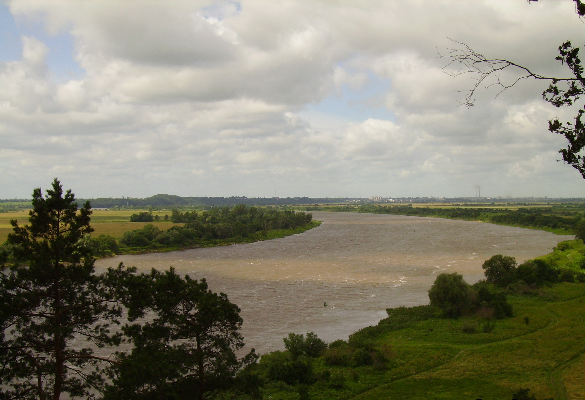

Место работы - ФГБУ "Гидрометцентр России"
1) имею законченное высшее образование, полученное в МГУ (естественный факультет), МИФИ (физико-математическое), ВАВТ (лингвистическое), а также учёную степень; 2) занимаюсь математическим моделированием процесса формирования речного стока с целью его прогнозирования; 3) имею определённый опыт в разработке ПО на языках типа BASIC, Algol, Fortran и незначительный на Python; 4) в настоящее время являюсь руководителем магистра МИРЭА, который под моим руководством разрабатывает метод долгосрочного прогноза водного режима одного из притоков р. Тобол на базе нейросетевой модели Temporal Fusion Transformer с использованием глубокого машинного обучения. Базовый язык программирования Python. P.S. Предполагается подключение разрабатываемого ПО к одному из региональных гидрологических порталов на базе web-технологии. 